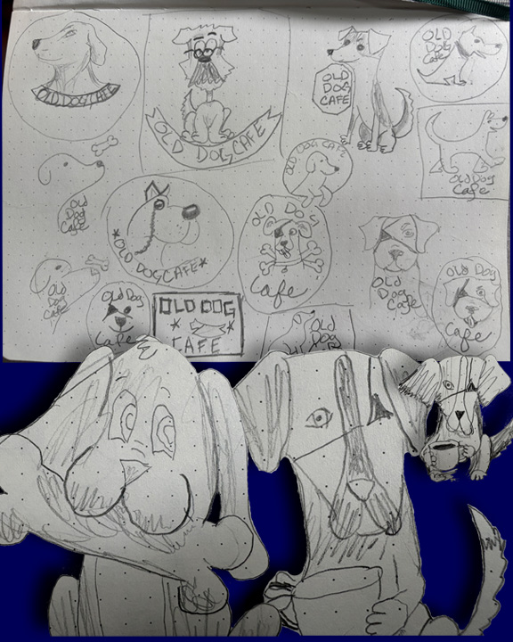

SOFTWARE
Adobe After Effects
Adobe Illustrator
Adobe InDesign
Adobe Photoshop
Blender
Microsoft Word
MY ROLE
Independent Brand Strategist
Environmental Designer
Marketing & Visual Communications
Packaging Designer
DELIVERABLES
Brand Identity System
Environmental Design
Menu & Print Design
Digital Design
Brand Guidelines
TOOLS & CREDITS
Envato Elements (licensed subscription assets & mockups)
PROJECT OVERVIEW
Old Dog Cafe is a community-focused cafe concept created to support senior dogs awaiting adoption. The brand combines a welcoming restaurant, specialty ice cream parlor, and dedicated dog spaces designed to encourage meaningful connections between guests and rescue animals.
The goal was to create an identity that celebrates the personality, companionship, and overlooked charm of older dogs while developing a complete customer experience across environmental design, print materials, digital media, and promotional applications.

Bathroom poster advertisement.

Style guide.
CREATIVE DIRECTION
The visual direction blends warmth, nostalgia, and playful personality to create a brand experience that feels inviting for both people and pets. The identity system was developed across menus, signage, promotional materials, environmental graphics, and digital applications to create a cohesive space centered around community, compassion, and animal advocacy.
PROCESS
The Old Dog Café identity began with translating an unconventional business concept into a visual personality. The challenge was creating a brand that honored the character of older dogs while avoiding imagery that felt sad, fragile, or overly sentimental.
Sketch explorations tested a variety of canine expressions and silhouettes to find a mascot that felt wise, confident, and welcoming. From there, the identity evolved through logo refinement, typography pairing, and composition studies to create a visual system that balanced compassion, community, and playful café energy.

Logo Sketches.
THE BRAND IN USE


MENUS & CAMPAIGNS


SPACE & STRATEGY
Animated brand advertisement concept featuring the Old Dog Cafe mascot exploring a nighttime park environment before discovering the cafe experience. The looping animation creates a memorable emotional connection between the brand character and the cafe's mission of companionship and community.
Let's create a brand that feels like home.
CONTACT ME